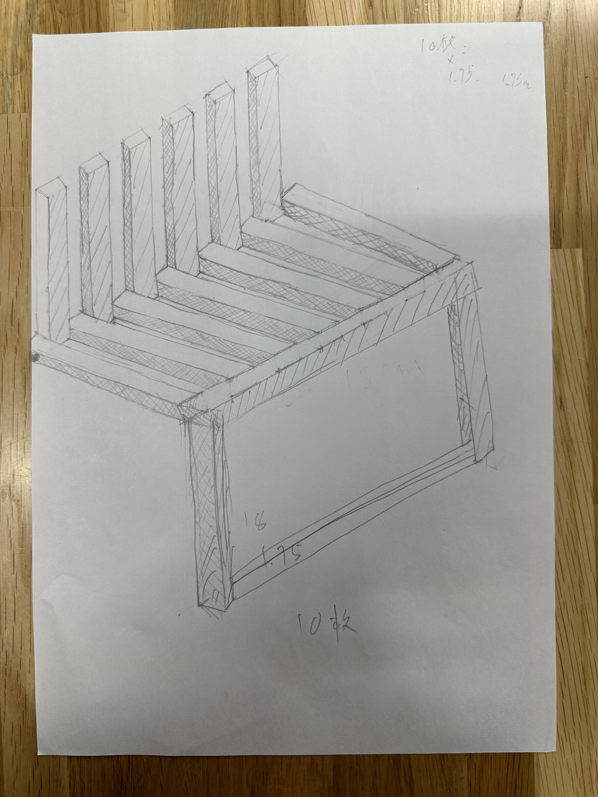

鎌倉市民の方々の声
私たちは、観光地としての鎌倉の町は食べ歩きや寺などが多く、長距離の移動や立っていることが多いのにも関わらず、座って休憩できるところが少ないことから
持ち歩きができる軽量な椅子があれば便利という意見をいただきました。
↓
班のメンバーと話し合っている中で、現在のネット通販で販売されている持ち歩きができるベンチの種類は非常に多く、軽量でとても安価なものがたくさんありました。
それを踏まえた上でこの方の根本的な問題を再確認して、自分たちの作るべきものを再思考しました。
まず、この方はベンチや休憩できるスペースが欲しいのではなく、『鎌倉』で休憩できるスペースが欲しいのだと理解して、持ち運べるものに拘らず鎌倉に設置できるような
椅子を作りたいと考えました。
鎌倉の街に設置できるような椅子を作るためにメンバーで仮に幾つかの条件を設けました。
1,折り畳み式でコンパクトに収まる。
→鎌倉の食べ歩き街などは観光客がたくさんいてなかなか大きなスペースは確保できないと判断したため
2,鎌倉の街にも溶け込むようなデザイン
→鎌倉の街はコンビニやパーキングの看板の色なども通常と違う落ち着いた色を使ったり、空間作りが徹底されている街なので
この街の景観を崩さないようなデザインを考える。
その条件を踏まえた上でスケッチをしてみました。
